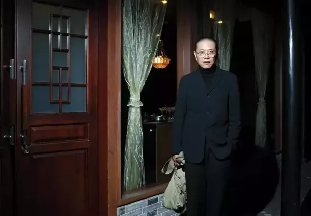
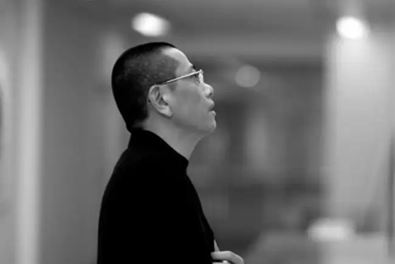
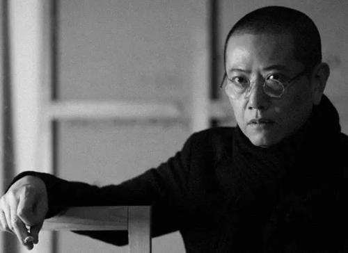

陈丹青
陈丹青，男，祖籍广东台山市三合镇良村，1953年生于上海，毕业于中央美术学院。艺术家、作家、文艺评论家。
重要事件
《中国的山川》
陈丹青在得知汶川地震后的第二天，创作了“并置”系列中尺幅最大的一张画——《中国的山川》。在这幅画作中，清代山水画家石涛、元代画家倪云林的水墨画被陈丹青以油画的方式进行了创作媒介的置换。古人的诗意，古代的山川，这一切消逝的风物仿佛古董珍玩一样，被画家“晾晒”在画布上，其静谧、静止营造出一派肃穆。陈丹青的《中国的山川》在慈善拍卖会上以165万元人民币拍出，善款全部捐给汶川地震灾区。
《红脸的民工》
日本3·11大地震后，在“爱与希望·艺术界支援日本灾区儿童慈善活动”中，由陈丹青领衔的中日韩三国80余位艺术家捐赠98件作品，以低于艺术家作品市场价的定价进行爱心义卖。作品包括油画、版画、装置、影像等。陈丹青表示，“主办方说哪怕捐张素描也好，但我觉得不好意思拿素描作品，就捐了一幅油画”。陈丹青捐出一幅创作于2009年的油画《红脸的民工》义卖定价为25万元，义卖所得善款将拨付日本受灾儿童。
《文学回忆录》
1989年，在纽约的陈丹青和朋友商量请木心正式开课讲文艺，听课的大都是当时在美的一些艺术家。他们定下规矩：每位听课人轮流提供自家客厅；春秋上课；每次讲四小时，每课间隔两周。历时五年，近90堂课。2012年，陈丹青找出自己的五大本笔记，经过近一年的整理，最终完成近50万字的录入，将木心讲稿成书——《文学回忆录》，分为上下两册，2013年由广西师范大学出版社出版。
主要成就和荣誉
- 亚洲杰出艺术家终身成就奖
- 中国首届时代艺术家大奖
- 2008年中国收藏界十大人物
- 金南方2011最受读者关注年度作家
主要作品
群展
（部分）
- 《全军美展》（《进军西藏》中国美术馆北京1977）
- 《全国美展》（《泪水撒满丰收田》中国美术馆北京1977）
- 《中央美院研究生毕业展》（《西藏组画》中央美院美术馆北京1980）
- 《中华人民共和国美术展》（春季沙龙法国巴黎1982）
- 《中国当代艺术展》（曼哈顿美国纽约1982）
- 《群展》（圣塔安娜现代美术馆美国洛杉机1987）
- 《中华五千年文明艺术展》（哥根汉姆现代美术馆美国纽约1998）
- 《二十世纪新古典主义回顾展》（伍斯登现代美术馆比利时2001）
- 《中国德国当代艺术对话展》（杜依斯堡现代美术馆德国杜依斯堡2002）
- 《最初的形象Ⅱ当代纸上作品展》（艺博画廊上海2003）
- 《艺术与战争》（格拉兹美术馆奥地利格拉兹2003）
- 《感觉记忆》（艺博画廊上海2004）
- 《世纪风骨中国当代艺术名家展》（中华世纪坛艺术馆北京2004）
- 《艺术与中国革命》（亚洲协会美术馆美国纽约2008）
- 《多伦5年中国当代艺术回顾展》（多伦现代美术馆上海2008）
- 《非常状态中国当代艺术十二名家展》（墙美术馆北京2009）
- 《二十世纪中国绘画名家邀请展》（中国国家大剧院北京2009）
- 《原曲2011夏季联展》 (原曲画廊上海2011)
- 《溪山清远中国新绘画》（路易斯布鲁恩基金会英国伦敦2010）
- 《中国当代艺术三十年历程绘画篇》（民生现代美术馆上海2010）
- 《改造历史2000－2009年的中国新艺术》（国家会议中心北京2010）
- 《精神与历程》（全国巡回展2010）
- 《2010海上油画雕塑名家邀请展》（张江当代艺术馆上海2010）
- 《轨迹与质变北京电影学院60周年邀请展》（空间美术馆北京2010）
- 《青春叙事知青油画邀请展》（上海美术馆上海2010）
- 《爱与希望支援日本灾区儿童》（伊比利亚当代艺术中心北京2011）
- 《视觉记忆》（上海美术馆上海2012）
- 《四十年的故事时间友谊艺术》（上海南昌2012）
- 《融汇拓新——海外归国艺术家绘画作品展》（中华世纪坛世界艺术馆北京2012）
- 《群珍荟萃全国十大美术馆藏精品展》（中国美术馆北京2013） [4]
- 《第55届威尼斯双年展平行展“心跳”》（意大利威尼斯2013）
个展
- 《陈丹青作品展》（纽约美国）
- 《陈丹青作品展》（波士顿美国）
- 《陈丹青作品展》（洛杉矶美国）
- 《陈丹青油画展》（国立国父纪念馆台北1995）
- 《陈丹青作品展》（香港科技大学艺术中心香港1998）
- 《陈丹青1968-1999素描油画展》（北京武汉沈阳广州南京上海2000）
- 《陈丹青归国十年》（中国油画院北京2010）
- 《陈丹青个展：退步 1968-2019》（当代唐人艺术中心北京2019）
策展
- 《回到写生》（中国美术馆北京）
- 《面对原典》（中国油画院北京）
- 《林风眠与木心》（木心美术馆乌镇）
- 《尼采与木心》（木心美术馆乌镇）
- 《圣经与木心》（木心美术馆乌镇）
- 《莎士比亚与汤显祖》（木心美术馆乌镇）
- 《木心的讲述：大英图书馆珍宝展》（木心美术馆乌镇）
- 《塔中之塔》（木心美术馆乌镇）
- 《古波斯诗抄本》（木心美术馆乌镇）
- 《文学的舅舅：巴尔扎克》（木心美术馆乌镇）
- 《米修与木心》（木心美术馆乌镇）
画集
- 《陈丹青速写集》（天津人民美术出版社）
- 《陈丹青画集》（香港中文大学）
- 《陈丹青画册静物》（香港科技大学艺术中心）
- 《陈丹青素描集》（广西美术出版社）
- 《陈丹青1968-1999素描油画集》（河北教育出版社）
- 《当代艺术家丛书陈丹青》（四川美术出版社）
- 《陈丹青归国十年油画速写》（广西师范大学出版社）
- 《陈丹青素描油画》（浙江人民美术出版社）
文集
- 《纽约琐记》上 下册（吉林美术出版社）
- 《纽约琐记》修订版（广西师范大学出版社）
- 《陈丹青音乐笔记》（上海音乐出版社）
- 《多余的素材》（山东画报出版社、广西师范大学出版社）
- 《退步集》（广西师范大学出版社）
- 《退步集续编》（广西师范大学出版社）
- 《与陈丹青交谈》（上海文艺出版社）
- 《笑谈大先生》（牛津出版社、广西师范大学出版社）
- 《荒废集》（广西师范大学出版社）
- 《外国音乐在外国》（广西师范大学出版社）
- 《跟陈丹青聊天》（湖南文艺出版社）
- 《草草集》（广西师范大学出版社）
- 《谈话的泥沼》（广西师范大学出版社）
- 《无知的游历》（广西师范大学出版社）
- 《回顾展的回顾》（四川人民出版社）
- 《影像杂谈》（四川人民出版社）
- 《张岪与木心》（中国美术学院出版社）
- 《局部：陌生的经验》（广西师范大学出版社、北京日报出版社）
- 《局部：我的大学》（北京日报出版社）
- 《局部：伟大的工匠》（北京日报出版社）
编著
- 《文学回忆录》（广西师范大学出版社）
- 《木心谈木心》（广西师范大学出版社）
生活照



生平
陈丹青自幼喜欢绘画。
1970年至1978年，陈丹青辗转赣南与苏北农村插队落户。期间创作连环画《边防线上》《维佳的操行》，油画《泪水洒满丰收田》等等，并入选“全军美展”“全国美展”。在当时产生了一定影响，已是颇有名气的“知青画家”。陈丹青属于初中文化，自学成才，在多个领域成就斐然。
1978年,考入中央美术学院油画研究生班。
1980年，陈丹青以具有划时代意义的油画——《西藏组画》，引起极大轰动，至今余韵不绝。1980年毕业留校任教。
1982年，陈丹青辞职移居美国。
2000年，陈丹青回国并受聘清华大学美术学教授、博士生导师。
2014年，因对教育制度的教条、刻板难以认同，陈丹青遂于2004年10月辞职。再次引起社会关注。
丹青语录
艺术
- 艺术家是最狂的，最自得其乐的一种动物。
- 真的美术史是什么，是一声不响的大规模淘汰。
- 文凭是为了混饭，跟艺术没什么关系。单位用人要文凭，因为单位的第一要义是平庸。文凭是平庸的保证，他们决不会要梵·高。
- 世界上的重要艺术家都不是研究生学历，也不是本科、美院附中，有的连高中都没上。梵·高就是个病人，毕加索也没有大学文凭。当今中国，需要文凭，为了就业，得到社会的认可，你就得拿个文凭。
- 你一定要肯定自己的感受，感受是很可贵的东西。画出动人的画，凭的是感受，而不是技巧。我画的那个朝圣的小姑娘，那么苦、那么好看，但她自己却不知道——艺术就是这样，凭这一点点就打动人了。
- 偏爱、未知、骚动、半自觉、半生不熟，恐怕是绘画被带向突破的最佳状态。
- 常识健全就是基础，素描不是基础，素描教学是反常识的。什么都很重要，但你要说素描最重要，那就不对。一棵树，你能说哪根树枝，哪片树叶最重要吗？
- 我没有素描基础，不是照样画创作？中国传统绘画从来就不画素描，难道就是没基础了？想当年，我们一起画画的同学中，那些把大卫石膏像画得好得无与伦比的人，不知道哪里去了。
- 艺术家是天生的，学者也天生。“天生”的意思，不是指所谓“天才”，而是指他实在非要做这件事情，什么也拦他不住，于是一路做下来，成为他想要成为的那种人。
教育
- 将当今教育体制种种表面文章与严格措施删繁就简，不过四句话：将小孩当大人管，将大人当小孩管；简单的事情复杂化，复杂的事情简单化。
- 我一点不关心中国学生的英语如何。我看见大家的中文一塌糊涂。我们千千万万的“好萝卜”如今是英语也不好，中文也不好。
- 真正有效的教育是自我教育。我根本就怀疑“培养”这句话。凡·高谁培养他？齐白石谁培养他？
- 严格地说，我与每位学生不是师生关系，不是上下级关系，不是有知与无知的关系，而是尽可能真实面对艺术的双方。这“双方”以无休止的追问精神，探讨画布上、观念上、感觉上，以至心理上的种种问题。那是一种共同实践，彼此辩难的互动过程，它体现为不断的交谈，寻求启示，提出问题，不求定论，有如禅家的公案，修行的细节。
- 人文艺术学院还要考政治，然后艺术的在考外语。所以我四年找不到研究生，就是仅仅因为他的政治差一分，他的英语差一分。就算他画的和梵·高、毕加索一样好也没用。艺术学院应该招一些疯子，而不是那些成绩优秀的好孩子。
- 你能活着目击如此畸形的教育现状，也是千载难逢的福分。我有时瞧着一幅糟糕透顶的图画，不由得好生佩服：画到这么差，也是本事啊！
- 今日大大小小教育官员除了一层层向上负责，对青年、对学问、对教育、对社会，谁有大担当?